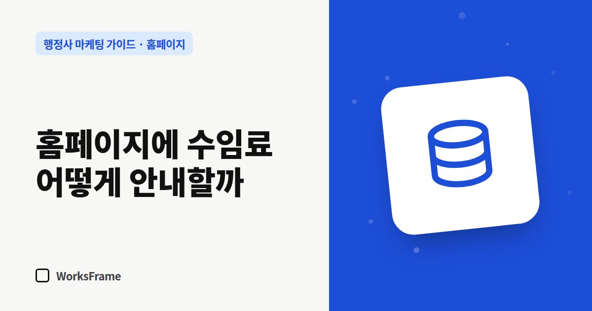

홈페이지
행정사 홈페이지에 수임료, 어떻게 안내할까
한 줄 답
금액을 다 적지 않더라도 ‘보통 얼마 사이인지, 무엇에 따라 달라지는지, 따로 드는 비용은 무엇인지’를 적고, 진행 전에 견적을 먼저 드린다고 알려 주세요.

“비용이 얼마예요?”는 거의 모든 상담의 첫 질문입니다. 홈페이지에서 이 질문에 전혀 답하지 않으면, 비용이 궁금한 고객은 연락 대신 다른 사무소를 찾아봅니다.
세 가지 안내 방식
| 방식 | 예 | 장점 | 단점 |
|---|---|---|---|
| 금액 공개 | “○○ 신청 대행 ○○만 원” | 문의가 빨라짐 | 사건마다 달라 예외가 많음 |
| 범위 안내 | “보통 ○○만~○○만 원, 서류 준비 정도에 따라” | 기대치를 맞춤 | 범위가 넓으면 의미가 약함 |
| 상담 후 견적 | “상황 확인 후 견적을 드립니다” | 유연함 | 비용이 궁금한 고객이 떠날 수 있음 |
많은 사무소에 맞는 것은 범위 안내 + 달라지는 이유 설명입니다.
오해를 줄이는 표기
- 포함·불포함을 나눠 적기 — 수임료와 별도로 드는 인지대·수수료, 번역·공증 비용 등
- 부가세 포함 여부 명시
- 달라지는 조건 — 서류 준비 정도, 보완 요청 여부, 급한 일정
- 환불·중단 기준 — 진행 중 그만둘 때 어떻게 정산하는지
금액을 적지 않더라도
“어떻게 정해지는지”는 알려 주세요.
비용은 업무 종류, 준비된 서류, 일정에 따라 달라집니다. 상담에서 상황을 들은 뒤 진행 전에 견적을 먼저 안내하고, 동의하신 경우에만 진행합니다.
이 한 문단만 있어도 고객의 불안이 크게 줄어듭니다.
저가 경쟁은 조심
가격만 낮춰 강조하면 비슷한 가격 경쟁에 끌려가기 쉽습니다. 가격보다 무엇을 해 주는지(서류 검토, 보완 대응, 진행 상황 안내)를 구체적으로 보여 주는 편이 낫습니다.
자주 묻는 질문
다른 사무소보다 비싸면 공개하지 않는 게 낫나요?
비싼 이유를 설명할 수 있다면 공개가 오히려 도움이 됩니다. 포함된 일을 구체적으로 적어 비교할 기준을 주세요.
금액이 바뀌면 어떻게 하나요?
업데이트 날짜를 함께 적어 두고, 바뀌면 바로 고치세요. 오래된 금액은 분쟁의 씨앗이 됩니다.